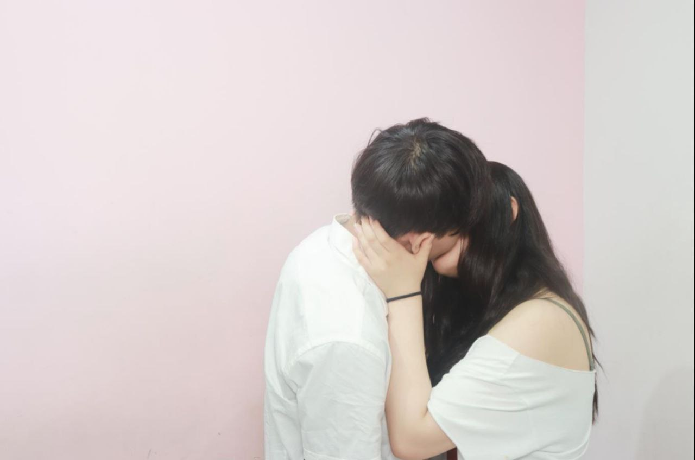
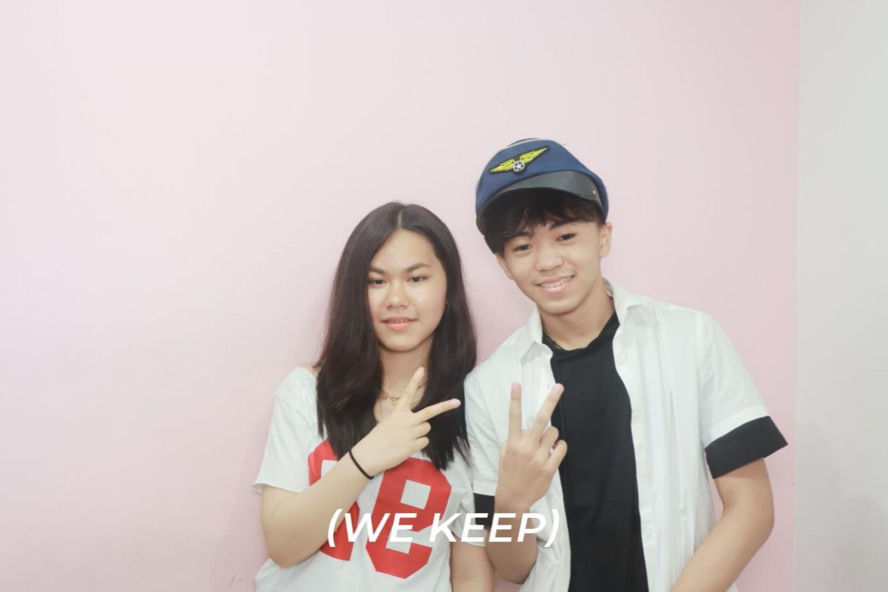

1 year anniversary
Memories
Bucket List of Dates
Our Future?
Conclusion
HIIII BABYYY 💗
Our Memoriess 💝
 
Bucket List of Dates I wanna go on with you 💫
About Our Future / Future Plan 💍
HOPE I SEE YOU AS SOON AS POSSIBLE 💓💗